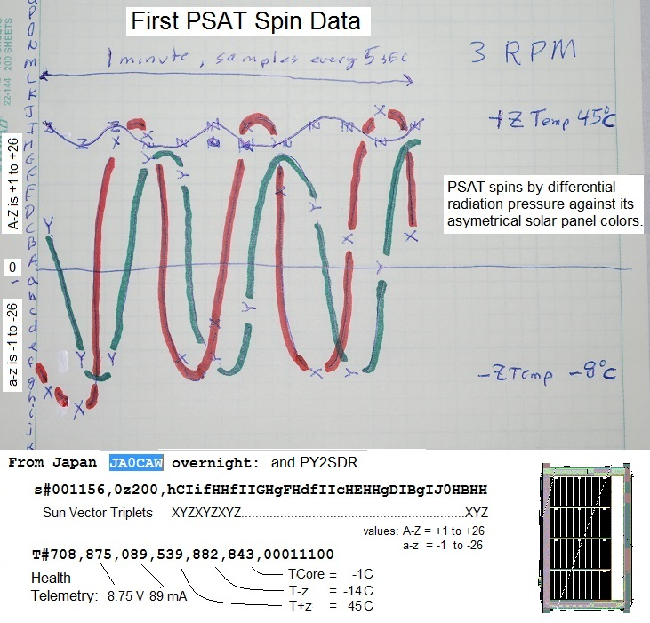
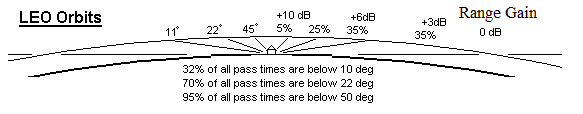
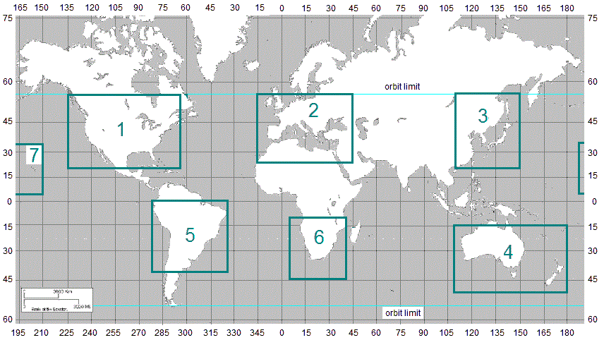
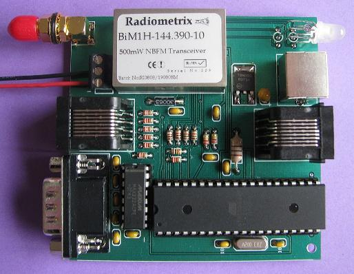

{kind=link}
{kind=link}
{kind=link}
{kind=link}
 PSK31 Primary Payload: But the real excitement is the Brno Universtiy PSK-31 transponder that is also on PSAT.
(See Brno PSK31 details) .
It is the Primary mission and has priority when power is available for user uplinks and is working well.
A modest antenna can copy the FM waterfall downlink horizon to horizon and permits dozens of simultaneous PSK31 users to operate full duplex and maintain a continuous group dialogue throughout the pass. But operating full duplex on PSK-31 is new and it will take a while for users to figure out how to do this. KO6TD has prepared the table at right of capabiites of typical PSK31 user software. Only WinPSK can operate full duplex but a special PSAT PSK31 uplink has been written so you can use any other program too.
PSK31 Primary Payload: But the real excitement is the Brno Universtiy PSK-31 transponder that is also on PSAT.
(See Brno PSK31 details) .
It is the Primary mission and has priority when power is available for user uplinks and is working well.
A modest antenna can copy the FM waterfall downlink horizon to horizon and permits dozens of simultaneous PSK31 users to operate full duplex and maintain a continuous group dialogue throughout the pass. But operating full duplex on PSK-31 is new and it will take a while for users to figure out how to do this. KO6TD has prepared the table at right of capabiites of typical PSK31 user software. Only WinPSK can operate full duplex but a special PSAT PSK31 uplink has been written so you can use any other program too.
You cannot use normal Doppler Radio Tuning on PSK31: Any attempt to correct for Doppler by tuning the radio (as is standard practice for other satellites) will not work with PSK31. When the radio steps in frequency, no matter how small, a phase discontinuity results and that corrupts PSK31. So make no attempt to correct the uplink SSB signal with radio tuning. It is OK to let the software adjust the FM UHF downlink the usual 5 KHz steps since it is only 4 times during the pass. But not the SSB uplink.
Operating PSAT PSK31 Properly - And full Duplex: Andy, K0SM wrote a PSK31 TX-only program that not only corrects for Doppler only at the Audio level, but it also lets your run full duplex with your existing PSK31 downlink. It pre-corrects the audio for Doppler on the uplink as shown below so that your signal remains constant in the downlink! You can see his uplink coming down as a straight track while others are showing Doppler. Most PSK31 clients can compensate for up to 1 Hz/sec of Doppler, but Andy's program makes your signal constant. Other users without compensation, can drift from 1 to 6 Hz per second depending on where they are relative to the track of the satellite.
Auto-Tuning Warning! PSK31 needs phase coherence down to a few Hz to properly decode. You cannot use automatic rig-control/tracking-tuning because everytime you step the radio frequency, there will be a Phase shift and any PSK31 decoding will loose sync until it can rephrase. If you are updating the radio at say every 10 Hz, you will most likely not decode anything! The solution is to set your software to only step the radio once every 2.5 KHz to minimize these glitches and loss of characters while still keeping the FM signal in the passband.

APRS Digipeater is ON: But the 350 mW transmitter is pretty weak by digipeater standards. When the DIGI is on, the satellite callsign is PSAT. When it is off (SAFE mode), the callsign is PSAT-1. The digipeat ALIASes are the usual, ARISS, APRSAT (and WIDEn-N if you forget). PSAT does NOT digi via its own callsign (bug). PSAT also has the ability to report its own APRS position in standard APRS format so users can see where it is on the front panel of their APRS radios. [This takes supstantial SYSOP effort and so is not being used...]
LIVE Telemetry Downlink: is now captured on Steve Dimse's, K4HG original pcsat.aprs.org web page. APRS packet is a secondary mission so the digipeater may be turned off if power is low. But beacons, telemetry and Bulletins will always remain. The five Telemetry Equations (after the serial number) in standard APRS telemetry format are:
Format: . . . . . T#SSS, VVV, I I I, XXX, YYY, ZZZ, 00011X00
VVV. . . = Bus Volts in hundredths
I I I . . . . = Bus Current in mA
XXX. . . = Temp +Z where T = -1.26E-6*X^3 +0.0028*X^2 -2.215*X + 625
YYY. . . = Temp - Z where T = -1.26E-6*X^3 +0.0028*X^2 -2.215*X + 625
ZZZ . . . = TempBat where T = -2.57E-6*X^3 +0.0061*X^2 -5.149*X +1475
In the 00011X00 field, only the X has meaning. 0 = DIGI ON, and 1 = Digi off
Launch was at 1504z on 20 May 2015 from the Cape with separation over Texas an orbit later and then the delayed 50 minute timer activated the power bus over New Zealand. First packets heard on next orbit over USA. All systems go except 1) a code error means we have lost 1-of-3 backup on-orbit reset capabilities 2)another bug does not allow smart power management via reduction of routine packets in the dark and 3) It does not respond to its own MYCALL. But so far, these are not critical. We seem to have plenty of power except for some sun angles.. Sister cubesats from same P-Pods were BRICsat on 437.975 MHz and USS Langley on 437.475 MHz both 9600 baud AX.25 packet telemetry. Please IGate APRS data live into the global APRS-IS so it shows on pcsat.aprs.org. Report any unusual events to Bob Bruninga, WB4APR, lastname at usna.edu.

First SPIN data: Initially, PSAT appeared to be spinning about the Z axis as designed. On the 3rd day (first spin data) the spin about the Z axis was about 3.0 RPM with little wobble and the +Z axis pointed about 45 degrees off the Sun. This gives max power as all three axes are always illuminated. You can see how we manually decode the S#OOOMM... status packet alphabet soup to plot the 1 minute spin samples in the photo above. Or you can see how Ken Ernandes later plotted it. By the end of the sun side of the orbit, the +Z panel is reaching +60C (140F). By the 10th day, though, the spin was down to 0.62 RPM. And was down around 0.2 RPM for almost 25 days, then at the time it enetered a 10 day period of full Sun, it has been up between 3 and 6 RPM ever since (actually as high as 15 RPM).
{kind=link}
Unique Battery Design Required Spin: Each side panel only charges 2 of the 6 NiCd cells and so spin was essential for even charging. This design let us use large solar cells summing to only 2.8 volts per side panel. The minimum required spin would be 0.02 RPM to assure that each solar panel saw the sun at least ONCE in every 60 minute sun period. The differential white/black coloring we used gave us 500 times more than that!
This is one of five APRS Networked Amateur Satellites that will be on Orbit in 2015 and all will appear on the live APRS downlink page.
OUTNET a global APRS channel on 3 GEO satellites!
PCsat-1 in orbit since 2001 semi-operational
ARISS on the ISS since 2007
Psat Now on Orbit! May 2015
Psat-2 Now delayed till Dec 2017
QIKCOM-1 Sitting on ISS since Dec 2016 awaiting FCC SNAFU to be turned on.
QIKCOM-2with APRStt (DTMF) for launch Dec 2017


The map above shows the ground stations that have IGated PSAT packets to the APRS-IS (internet system). Although these are the same stations listening to 145.825 as the ISS, the ISS station is 14 dB stronger (10W versus 0.35W for PSAT). So only IGates with good weak signal performace are successful with PSAT. As you can see, we need IGates in Hawaii, India, China and the Southern Hemisphere.
 Satellite IGATE Antennas: The least maintenance IGate antenna is an OMNI (so it does not wear out or require rotators) and it has decent gain above about 30 degrees and less gain on the horizon (where it cannot hear
a 350 mW satellite anyway).
See (SatGate Antennas) Not only is the gain higher at these elevations, but the satellite is also
6dB closer, thus giving a combined gain of nearly 13 dBi similar to an OSCAR class beam. (Note, an omni will probably not hear PSAT at all but is OK for the ISS and other 2W APRS satellites).
Another reason for minimizing gain on the horizon is the Donut-Hole NULL effect where any IGate that hears a
user station direct will send that into the APRS-IS first and that will cause the
subsequent space digipeated packet to be a DUPE and will be ignored by all IGates. So a mobile or
terrestrial omni is the worst omni (maximizes gain on horizon and usually has a null around 20 or 30
degrees which is where the satellite is best located!
Satellite IGATE Antennas: The least maintenance IGate antenna is an OMNI (so it does not wear out or require rotators) and it has decent gain above about 30 degrees and less gain on the horizon (where it cannot hear
a 350 mW satellite anyway).
See (SatGate Antennas) Not only is the gain higher at these elevations, but the satellite is also
6dB closer, thus giving a combined gain of nearly 13 dBi similar to an OSCAR class beam. (Note, an omni will probably not hear PSAT at all but is OK for the ISS and other 2W APRS satellites).
Another reason for minimizing gain on the horizon is the Donut-Hole NULL effect where any IGate that hears a
user station direct will send that into the APRS-IS first and that will cause the
subsequent space digipeated packet to be a DUPE and will be ignored by all IGates. So a mobile or
terrestrial omni is the worst omni (maximizes gain on horizon and usually has a null around 20 or 30
degrees which is where the satellite is best located!
A good Satellite OMNI Igate antenna is a non-gain 1/4 wave vertical (19.5" over a large ground plane). Even better (+2 dB) is a 3/4 wave vertical (58" high) over a large ground plane shown here. It has nearly 7 dBi gain above 30 degrees, plus the +6 dBi closer range gain and not much at all on the horizon. It is best placed low in the yard to further minimize horizon gain as shown here.
 OVERVIEW: . PSAT was built by a group of students at the Naval Academy and named
in honor of one of our graduates,
Dr Parkinson of GPS fame,
and funded from a gift to the Academy in his honor. PSAT contains an APRS packet radio communications transponder for relaying remote telemetry,
sensor and user data
from remote users and amateur radio environmental experiments or other data sources back to
Amateur Radio experimenters via a global network
of internet linked volunteer ground stations. The data transponder also includes all
telemetry, command and control for a complete cubesat. A secondary transponder supports multi-user PSK31 text messaging users via a Brno University transponder.
OVERVIEW: . PSAT was built by a group of students at the Naval Academy and named
in honor of one of our graduates,
Dr Parkinson of GPS fame,
and funded from a gift to the Academy in his honor. PSAT contains an APRS packet radio communications transponder for relaying remote telemetry,
sensor and user data
from remote users and amateur radio environmental experiments or other data sources back to
Amateur Radio experimenters via a global network
of internet linked volunteer ground stations. The data transponder also includes all
telemetry, command and control for a complete cubesat. A secondary transponder supports multi-user PSK31 text messaging users via a Brno University transponder.
See the Psat paper at the 2010 AMSAT symposium
Operations in the Amateur Satellite Service: Both of the transponders on PSAT are operated in the Amateur Satellite Service to encourage amateur radio students, educators and experimenters around the world to contribute additional satellities to this constellation on 145.825 MHz or to build interesting self motivated remote sensors suitable for the uplink channel. See our ocean or bay oceanographic data buoys for examples. This kind of Amateur Radio experimentation fits well in the ITU rules (see Psat justification) for operating in this service and well serve our educational and outreach goals for student projects encouraging young people to be interested in Science, Technology, Engineering and Math. The satellite is operated under the license of our control operator, WB1HAI, Todd Bruner in Annapolis.
APRS Packet Transponder: The APRS packet transponder is an AX.25 Packet Radio Relay similar to what is flying on PCsat and the ISS. This ongoing mission in space on the original PCsat is now over 12 years old and pioneered this very popular operating mode via the ISS since 2006. Both of these missions deliver packets to users worldwide via the global network of volunteer ground stations feeding the two downlink capture pages: psat.aprs.org and ariss.net. These pages display live maps such as the one above, of the most recent user position data and capture all message traffic between users. See the APRS link budgets. In addition there is also a PSK31 transponder as noted below.


 PSK31 Transponder: The Brno University PSK31 Multi-user FDMA transponder experiment is similar to what we flew on RAFT and PCSAT2 missions. See the full PSK31 design concept here. This text messaging transponder allows messaging between up to 30 modest ground stations simultaneously. In the example waterfall display above, 10 users are clearly visible. Each user transmits a 31 Hz wide narroband transmission within the 3 kHz wide transponder, and all can be seen simultaneously via the UHF FM downlink. Uplink stations do not need gain antennas on the HF uplink but can use a vertical monopole antenna and 75 Watt SSB transmitter to give the transmit antenna profile as shown above. To calculate the PSK31 link budgets we combined the user TX antenna gain profile with the variation in range gain from the horizon to over 60 degree elevation as shown here at right. The combination gives an uplink power variation per user of less than +/- 4 dB over 90% of the duration of the pass.
 CUBESAT MODEL: Back in 2008, we re-designed the
original 1 cubic foot ParkinsonSAT to fit inside the a 1.5 unit cubesat so that two Psats could be launched from the same P-Pod launcher. That
design used four deployable solar arrays in a sunflower configuration and pointed towards the sun with a 3 axis ADCS.
Half of the 1.5 unit Psat was available for auxilliary payloads or experiments such
as the Brno University PSK31 experiment.
The current 2014 design remains a 1.5U cubesat but with higher efficiency
solar cells, we no longer need the deployable side petal panels and can operate
with fixed side panels as shown at the top of the page.
CUBESAT MODEL: Back in 2008, we re-designed the
original 1 cubic foot ParkinsonSAT to fit inside the a 1.5 unit cubesat so that two Psats could be launched from the same P-Pod launcher. That
design used four deployable solar arrays in a sunflower configuration and pointed towards the sun with a 3 axis ADCS.
Half of the 1.5 unit Psat was available for auxilliary payloads or experiments such
as the Brno University PSK31 experiment.
The current 2014 design remains a 1.5U cubesat but with higher efficiency
solar cells, we no longer need the deployable side petal panels and can operate
with fixed side panels as shown at the top of the page.
{kind=link}
Unique Power System: This model with the 4 large and efficient solar cells per side is designed around a unique power system. Since the total solar voltage per side is only 3.2 volts (0.8 volts per multijunction cell) we cannot charge the complete 9.6v battery string, but can charge two NiCd cells per solar panel. These 4 side-panel/NiCd-pairs are operated in series for the 9.6v bus, but are charged in parallel. This parallel charging of no more than two NiCd's in series per solar panel reduces one of the primary problems with spacecraft battery charging systems and that is the uneven charge balance that accumulated when entire strings are charged in series.
{kind=link}
Attitude Control: The primary attitude control requirement is to evenly expose the four side panels to the sun so that the NiCd cells are equally charged and to even-out the thermal load on the panels. A very slight spin about the Z axis is maintained by the unbalanced solar radiation pressure on each side. A highly reflective strip on the clckwise edge receives greaterr radiation pressure than the momentum transfer to the mostly black solar panels. This should create a fractional RPM spin (the Spin on PCsat now, 12 years in orbit is maintained between about 0.6 and 0.8 RPM by this method). Secondly, an active Z-Align algorithm using a single Z coil activated at appropriate locations in the Earths Magnetic Field will be used to keep the Z axis aligned approximately with the Earths poles so that the side panels are always within +/- 23 degrees or so of the Sun. This can maintain more than 90% power budget through the seasons.
 PSAT Position Reporting: PSAT like every other APRS Station sends its live position once every minute so that its location appears on the front panel of all APRS user radios so they can know which way to point their antennas. But rather than flying a very expensive space rated GPS, we simply use the fact that the orbit is fixed and so PSAT can run a 95.16 minute Mean Anomoly clock synced to the orbit period and then use a table of LAT/LONG values to downlink its position based on the minuute in the 95.16 minute orbit. Then every orbit the clock tics over, the longitude is shifted by the oribtal longitude increment as shown here.
Continetnal Bulletins: Since the above scheme allows PSAT to know where it is, then it can use that information to customize its bulletins to match the continent that it is over at the time. We have programmed PSAT to send unique bulletins over the LAT/LONG continental boxes shown here. There are three possible beacons for each continent. They are alternated every minute.
 Global Experimental Data Channel: PSAT is the space segment of this initiative to encourage both new satellite construction in support of this experimental data channel and lower cost buoy and sensor experimentation at other schools as shown below. Today, the only amateur satellites that are available for students and schools to support such experiments are the PCSATS built by students at the Naval Academy and on the ISS. But with ParkinsonSAT we hope to commence an ongoing full time presence in space to continue this support of the 145.825 data uplink channel for future experiments. To this end we hope other schools to either build additional 145.825 MHz relay satellites and/or to build experimental sensors. The complete comms system including data transponder fits on one 3.4 inch square card shown here. We hope that ParkinsonSAT will be the Egg in this chicken-egg conundrum.
The 2014 Final Design: When the 2014 launch opportunity becamse available, and since all the original design students were long gone and the design had not been thoroughly vetted, the system was redesigned and simplilfied. Here are the final docs for the PSAT delivered in January 2015 and launched on 20 May.
{kind=link}
{kind=link}
{kind=link}
{kind=link}
{kind=link}
{kind=link}
{kind=link}
{kind=link}
{kind=link}
{kind=link}
{kind=link}
{kind=link}
{kind=link}
{kind=link}
{kind=link}